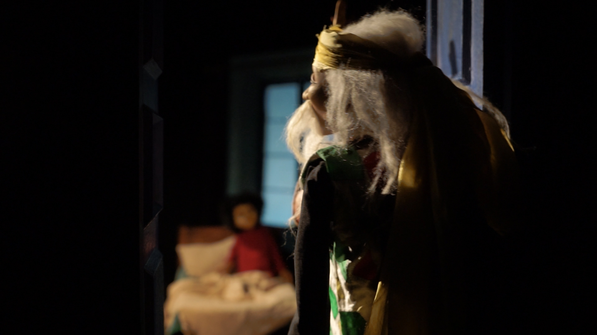
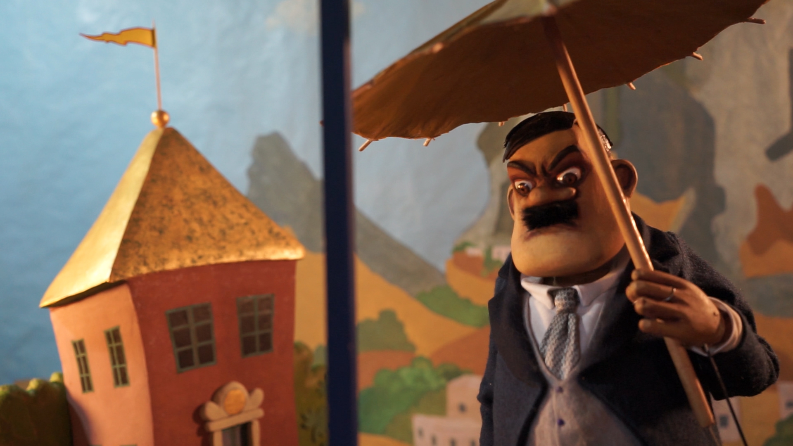
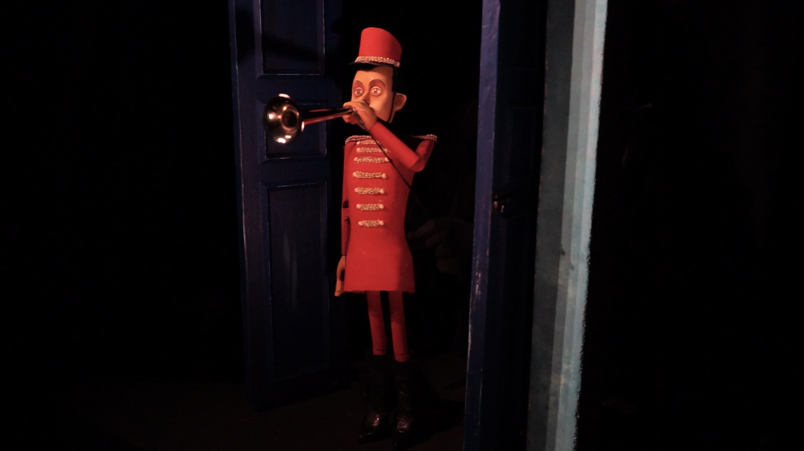
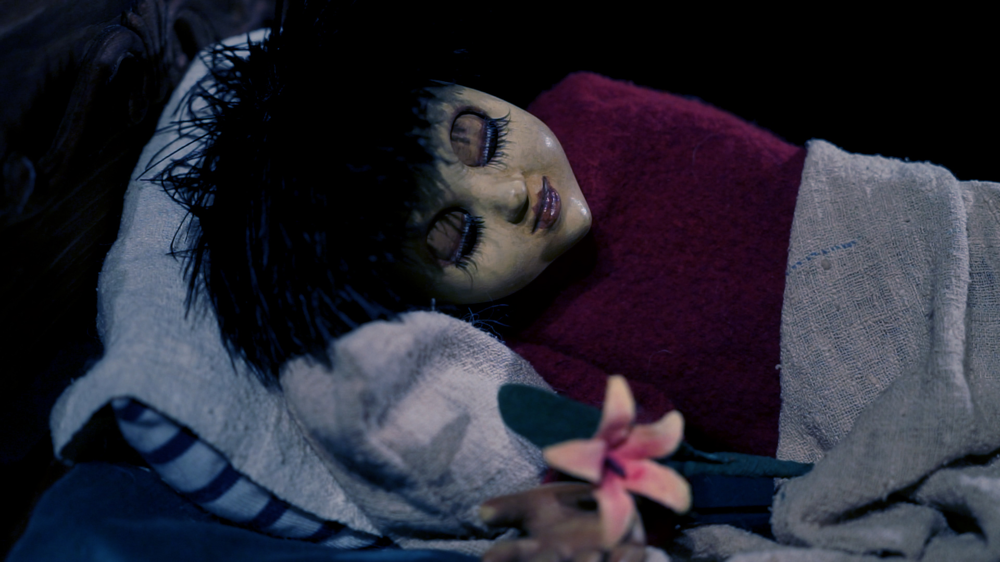
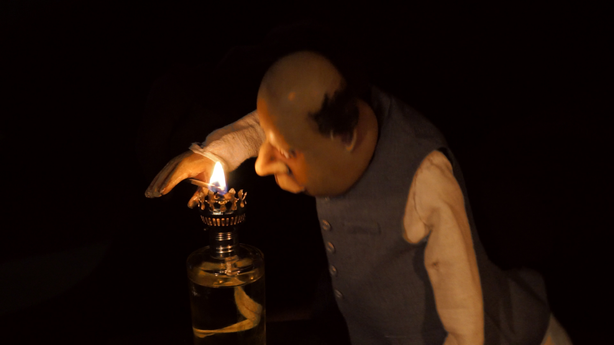
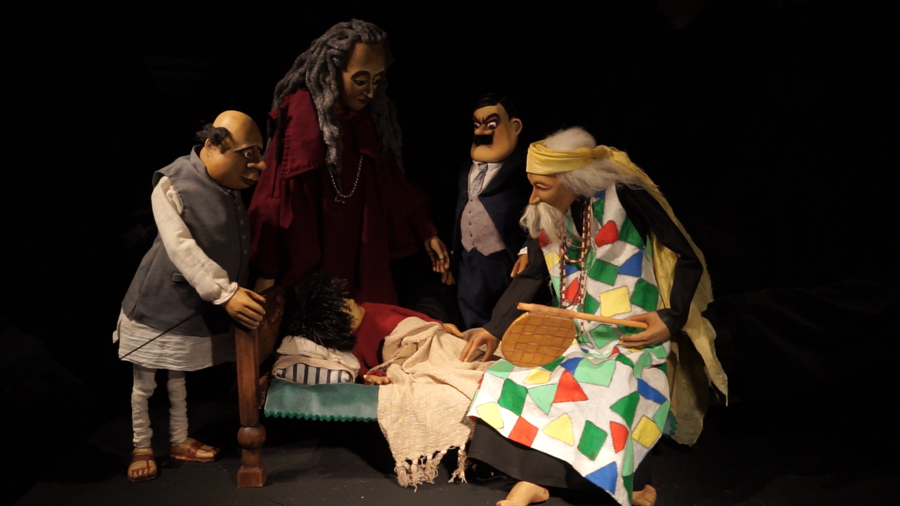
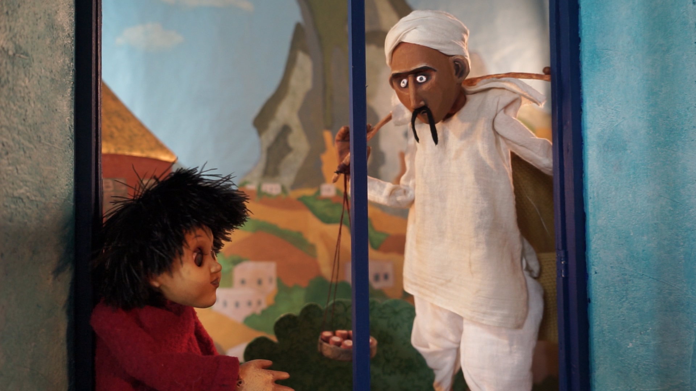

In 1912 Nobel Prize author Rabindranath Tagore wrote "The Post Office". In 2015 a group of pupeteers, actors and artists led by Silvia Bergman envisioned the play as a puppet movie with Swedish actors. We have now dubbed the movie to Bengali and English!
The 40 minute movie is free to watch in Swedish or Bengali, and we even made English subtitles that you can enable in YouTube settings.
Enjoy the movie!







Support the project
We made this movie out of love. If you love it too, please spread this link: www.thepostofficemovie.com. The movie is free to watch, but please consider donating €1, €5, €15 or €100 using the button on the right.
Credits
Script, direction, puppets
Silvia Bergman
Puppeteers
Bissa Abelli
Silvia Bergman
Lisa Björkström
Elisabeth von Gerber
Doris Ohlsson
Inger Jalmert-Moritz
Niklas Ågren
Voices (Swedish)
Amal – Disa Devi Bergman
Madhav – Niklas Ågren
The Doctor – Bissa Abelli
Grandpa – Nils Moritz
The dairyman – Henning Landin
The guard – Carlo Hiltunen
Village elder – Bengt Landin
Sudha – Disa Silfverberg
The boys – Tyra Wiklund, Elvira Wiklund, Prana Kulbay
The herald – Silvia Bergman
King's doctor – Henning Landin
Voices (Bengali and English)
Amal – Madhuja Chattaraj
Madhav – Partha Chakravorty
The Doctor – Chandan Kumar Das
Grandpa – Sudip Das
The dairyman/Royal Physician – Avik Ghosh
The Watchman/Herald – Sumanta Gangopadhyay
Village elder – Ashim Chattaraj
Sudha – Ankita Barik
The boys – Pramit Narayan, Moitra Srijani Roy
Camera, sound, lights, editing
Martin Olsson
Scenography, exterior
Silvia Bergman
Scenography, interior
Doris Ohlsson
Music
Lakshman Das Baul & Biswanath Das Baul
Thanks to
Rati Basu
Molly Basu
Binod Das Baul
Parvati Das Baul
Karin Magnusson
Gülbeden Kulbay
Gnesta Färghandel
Järna stenugnsbageri
Supported by
Konstnärsnämnden
Send a letter to Amal
The lead of our story dreams of receiving mail from the King. If you want to write a letter to Amal, post it to:
Amal c/o
Silvia Bergman
Mosebacke 10
64631 Gnesta
Sweden